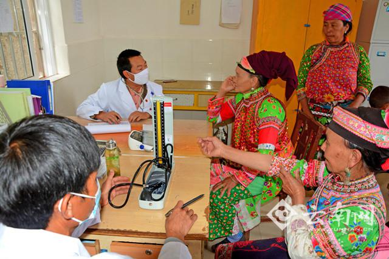

普惠阳光照耀云岭 民生改善值得期待

健康扶贫让百姓就近“看病”就医 通讯员 张树禄 摄
健康扶贫让百姓就近“看病”就医 通讯员 张树禄 摄
10月19日，在昆明市福海社区卫生服务中心刚做完体检的钟秀珠激动地说，党和国家既关注老百姓生活，还特别注重大家的健康，明确提出实施健康中国战略，这让我们很激动、很期盼。虽然自己患有高血压、糖尿病，但相信好日子会更有奔头。
西山区卫生和计划生育局局长龙晶晶认为，党的十九大报告高度重视全民健康，随着社会发展和时代变迁，从“能看病”到“看好病”再到“不得病”，人们的需求也从治病转变为提早预防，这对卫生健康工作提出了更高标准和要求。省第二人民医院肿瘤科主任王继营等专家学者表示，党的十九大胜利召开，医改不断向深水区推进，医改红利不断释放，健康中国战略将让群众生活更加美好。
“十九大报告站对中国特色社会主义进入新时代推进健康中国建设提出了明确要求，是我们做好卫生计生工作的根本遵循。我们一定深入学习领会，认真贯彻落实。”省卫计委主任李玛琳接受记者采访时说，新起点、新使命、新征程，党的十九大报告从民生关切着手，不仅开出深化医药卫生体制改革的“大处方”，还开出了改善医疗健康服务的“小处方”。一个更加可期的健康云南，将给老百姓带来更多、更广、更公平的健康福祉。